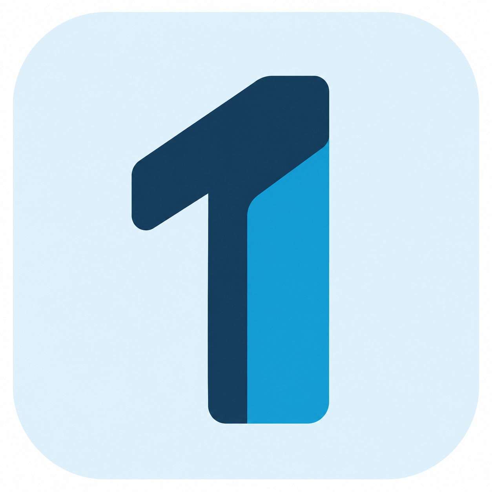
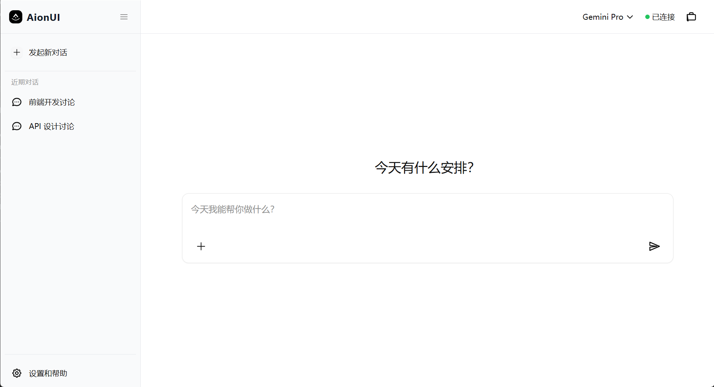
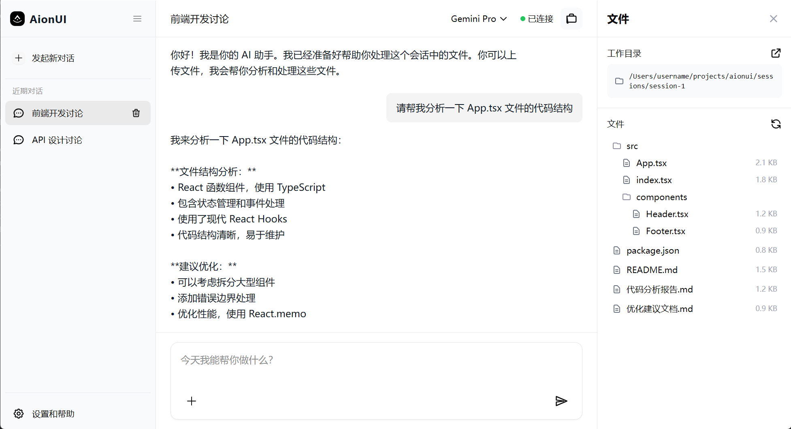

TheOne 万能助手把一句话，
交付成结果。
一个能看见分工、确认方向，并把复杂任务推进到底的万能助手。
AI 已经会回答，
但任务仍然停在对话框里。
真正复杂的工作，不是问出一句好答案，而是把目标拆开、找到合适能力、确认关键方向，再把结果交到手里。
背后至少包含：搜集资料、判断来源、整理结构、反复确认、产出文件，以及对结果负责。
- 聊天记录很长，但分工不可见
- 能力很多，但没有任务编排
- 结果生成了，却没有验收闭环
不是给聊天框再加几个 Skill，
而是给任务一条能走完的路。
从“我想要什么”，到“下一步由谁做、为什么做、做到什么算完成”，TheOne 把过程变成可见的协作。
把复杂请求，变成一条可验收的任务链。
每一步都有位置，每个分支都能回到同一个目标。
说清目标
一句自然语言，保留真实意图。
→自动分派
把工作拆成适合独立执行的子任务。
→先调研，再确认
先看案例和来源，重要方向交给用户确认。
→隔离执行
子任务拥有自己的工作空间与能力。
→父任务验收
结果回到主线，按标准检查后交付。
让“正在做什么”，
不再是黑箱。
主任务负责目标，子任务负责推进。每个分支都有状态、边界和回传路径。
从一句话，
直接跳到结论。
- 依据与来源藏在上下文里
- 方向不清时，只能继续追问
- 执行过程不可见，结果难复核
先把选择摆出来，
再让任务向前走。
- 先调研：寻找案例、方案与真实 Skill 来源
- 给方案：把可选路径、边界与验收方式说清
- 等同意：用户确认后才进入执行阶段
入口只有一个，
上下文可以很多。
保留熟悉的 AionUI 桌面界面，把多模型、Bot、文件与工作目录放在同一条工作线上。

素材说明：截图来自项目 resources/screenshot_1.png，展示真实 AionUI 入口与会话工作台，不是流程示意图。
文件、对话和工作目录，
在同一条上下文里。
结果不是漂浮在聊天里的文字，而是能落到文件、文章和工作空间中的产物。

素材说明：截图来自项目 resources/screenshot_2.png，展示对话、代码分析与文件树共存的工作上下文。
能力不是菜单，
而是任务链上的节点。
在同一个工作台里，TheOne 已接入多模型、Bot 广场、GitHub 导入、作图、文章库与 Computer Use 等能力。
- Bot：带着明确职责进入会话
- 作图：写入真实图像文件并回到工作区
- 文章库：沉淀 AI 情报与来源
- Computer Use：在边界内执行桌面动作
能力状态以当前源码、发布记录与交接证据为准，未验证部分不作已完成承诺。
真正的差异，发生在答案之后。
我们交付的，
必须先被验证。
这是一条正在变成产品的任务链。已经跑通的能力，和下一步要完成的闭环，清清楚楚地分开。
真实 AionUI 界面与 Pi 直连
源码与发布记录已有对应实现，界面素材用于本稿展示。
Bot 广场、任务树、文章库、作图能力
已接入或已有真实验证；具体范围以项目文档和验收记录为准。
完整自动链路与统一安装端验收
仍需继续验证与打包；不以单项真实成功代替全链路完成。
官网在线服务与 Windows 版本
不在当前已验证范围内，后续由官网任务独立推进。
让每一次委托，
都有下一步。
TheOne 万能助手 · AI 软件应用赛道